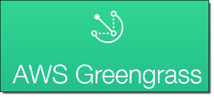

1. イントロダクション¶
1.1. ハンズオンシナリオ¶
Raspberry Pi上にGreengrass core、センサーデバイス、アラームデバイスを導入し、クラウドからGreengrass coreにデプロイした、Lambda関数によってエッジネットワーク内での
BLEゲートウェイに接続された温度／湿度センサーの情報をAWS IoTに送り、S3に保存し、Kibanaでセンサーの情報をグラフ化します。

1.2. 利用するデバイス、アプリケーション、サービス¶
Raspberry Pi 3
- レンジャーシステムズ社が提供するBLE/WiFiゲートウェイです。本ハンズオンでは、センサーからBLE経由で温度/湿度データ取得し、AWS IoTへのデータ送信に利用します。レンジャーシステムズ社のゲートウェイは、AWS IoTに直接接続可能で、AWSとの親和性が非常に高い製品です。他にLTE版のゲートウエイもあります。
- http://www.ranger-systems.co.jp/iot/
AWSアカウント
- センサーデータの保存先として使用するAWSを利用・管理するためのアカウント。アカウント作成の手順はこちらの通りです。
- https://aws.amazon.com/jp/register-flow/
AWS IoT
- 接続されたデバイスが安全かつ簡単にクラウドアプリケーションやその他のデバイスとやりとりするためのマネージド型プラットフォームです。本ハンズオンでは、デバイスからのセンサーデータの受信で利用します。
- https://aws.amazon.com/jp/iot/

AWS Greengrass
接続されたデバイスでローカルのコンピューティング、メッセージング、データキャッシュ、および同期。 AWS Lambda と AWS IoT を使用して AWS クラウドとローカルデバイス全体で IoT アプリケーションをシームレスに実行する。
https://aws.amazon.com/jp/greengrass/
{kind=link}
Amazon Kinesis Firehose
- Amazon Kinesis Firehose は、ストリーミングデータを AWS にロードする最も簡単な方法です。本ハンズオンでは、AWS IoTで取得したBLE Beaconデータを加工すし、S3に保存したり、ElasticSearch Serviceに保存し可視化するために使用します。
- https://aws.amazon.com/jp/kinesis/firehose/
Amazon Elasticsearch Service
- オープンソースのElasticsearchを利用できるマネージド型のサービスです。本ハンズオンでは、データのストアとElasticsearchで利用できるKibanaを利用してデータの可視化に利用します。
- https://aws.amazon.com/jp/elasticsearch-service/
Amazon S3 (Simple Storage Service)
- スケーラブルなクラウドストレージです。Webのコンテンツを配置してWebサーバとしても利用できます。本ハンズオンでは、センサーから取得したデータの保存先として使用します。
- https://aws.amazon.com/jp/sns/
AWS Lambda
- お客様のコードをイベント発生時やリクエストごとに実行できる管理不要なコンピューティングプラットフォームです。本ハンズオンでは、Kinesis Firehose内でセンサーデータの加工に使用します。
- https://aws.amazon.com/jp/lambda/
Amazon CloudWatch
- AWSクラウドリソースとAWSで実行するアプリケーションのモニタリングサービスです。メトリクスの収集、ログファイルの収集が可能です。本ハンズオンではCloudWatch Logsを利用してAWS IoTのログを収集、閲覧します。
- https://aws.amazon.com/jp/cloudwatch/
1.3. 事前準備¶
- VNCクライアント
Raspberry Piの操作は、VNCを使用してリモートで行います。VNC接続に必要なソフトウェアをURLからダウンロードし、インストールしておいて下さい。 <https://www.realvnc.com/download/viewer/> (Mac/Windows共通)`_`
Windowsの設定によっては、インストール出来ない場合があります。 その場合、インストーラーを”管理者として実行”してみて下さい。
MacOSの場合
1.4. サンプルプログラム¶
本ハンズオンで利用するサンプルプログラムです。Edison上で利用します。
https://s3-ap-northeast-1.amazonaws.com/awsiot-handson-dojo-jp/aws-iot-handson-dojo-basic.zip